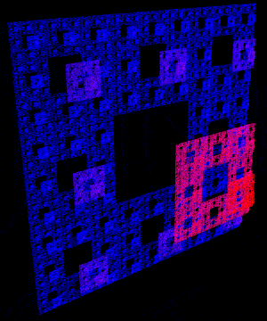

|
This document has two purposes, firstly to explore a fractal object
brought to my attention by Roger Bagula, the second to test the ability
of a new rendering package called Tachyon to handle large numbers of
spheres.
The object in question is created as a 3 dimensional IFS
(Iterated Function System). In essence one moves
from the current position towards a randomly chosen
point from a set of points, on each move a "marker" is deposited at the
current position. In this case the set of points lie at the vertices of an
octahedron, the resulting form is similar in appearance
to the Sierpinski carpet. Such geometry is often hard to visualise. Using
non shaded techniques such as OpenGL tends to result in confusing masses
of "dots" because there isn't enough occlusion. Sampling onto a 3D grid
for use with a volume renderer isn't satisfactory because the voxel
cells can't be made small enough to reflect the fractal structure.
The problem if one wishes to raytrace these objects is that they
take a long time to
evolve and therefore whichever primitive is drawn at each point needs
to be able to be rendered efficiently. For a raytracer a sphere is
normally chosen. For all the examples shown on the right one million
spheres were used. On average these took in the order on 30 seconds to
5 minutes to render depending on the level of antialiasing, ray depth,
and image size. These timings are for
a Dec Alpha ES40 (4 processor machine but only one processor was used
unless indicated otherwise).
The Tachyon scene file follows.
begin_scene
resolution 1000 1000
camera
zoom 1
aspectratio 1
antialiasing 4
raydepth 6
center 5 0 0
viewdir -5 0 0
updir 0 1 0
end_camera
texdef themat
ambient 0.2
diffuse 0.8
specular 0.5
opacity 1
color 1 0.4 0.4
texfunc 0
light
center 0 4 -4
rad 0.01
color 1 1 1
light
center 0 4 4
rad 0.01
color 1 1 1
light
center 0 0 0
rad 0.01
color 1 1 1
# This is the output from create.c
include 1000000.inc
end_scene
For details on the file "1000000.inc" see the create.c program below,
it basically creates a file consisting of a large number of "sphere"
primitives. For example:
sphere center -0.7276 0.3077 -0.0040
rad 0.001
themat
C Source to create the points from the IFS:
create.c. These are represented as sphere
primitives for Tachyon.
The example below with the colour ramp will be left
up to the reader to create. The models here simply mapped z axes
depth onto a colour ramp. They were rendered with spheres half the
radius as before (0.001)
but there were twice as many (2 million) of them, the images
were also created at 2K by 2K pixels, with antialiasing of 4 and
raydepth of 6.
Each sphere now needs it's own material specification, for example:
sphere center -0.72765 0.307711 -0.00406442
rad 0.001
texture ambient 0.2 diffuse 1
specular 0.75 opacity 1
color 0.99 0.005 0 texfunc 0
Using the threaded version 0.93.1 of Tachyon on a 4 processor Dec Alpha
ES40 this rendering took 90 seconds, 915 MB RAM.

|